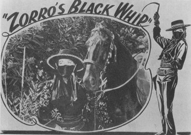
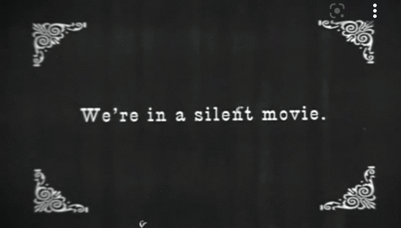

Reflecting AFK (away from keyboard) poetry reading thru TBT.
The Cowgirl Manifesto was written in 2020. It paints the dystopian image of a world enveloped by big tech and big data ranches. Heavily influenced by xenofeminism, cyberfeminism, and glitch. To reflect the style of glitch, wherein Russell asks us to “revisit, occupy, and decolonize” media (using a Walt Whitman quote), the Cowgirl Manifesto contains excerpts from Patti Smith, Tom Jones, and TS Eliot, as well as biblical references.

The Cowgirl Manifesto uses the cowgirl/cowboy metaphor and these references to popular culture to convey disenfranchisement under capitalist technological infrastructure. Cowgirls are the outlawed insurgents (see left) to the data wranglers of the Big Data Ranches. They harness tools traditionally used by Cowboys to interrupt the herd. Cowgirl can be used as an adjective: “The way you released the full track list for that mix, including the deep discogs cuts, was very cowgirl”, or “skipping Uber to catch the bus is cowgirl”. Reference the poem in the design – creating a mis en scene of sorts with ephemeral media that appears and disappears as the poem is spun?
What constitutes data? “Data is information that has been translated into a form that is efficient for movement or processing” usually in binary form.
According to Oxford Languages via Google, “things known or assumed as facts, making the basis of reasoning or calculation.”
data weapons: “any technological tool used to surveil, police and criminalize Black and Brown communities”
Data is not unbiased, it is not objective.
Inspired by the imperfect amalgamation that is exitsense.net, symbols will be distorted and repurposed thru GIF, CSS animation and image manipulation. One idea is to enable scroll on the BG while the time based text is overlayed and slightly transparent.
“Old Western Sound Effect Ambient noise”
So in the presentation it was mentioned to go deeper into the cowgirl metaphor. I like this idea. It’s a strong symbol. Above is a link to some sound inspirations. Because of the talk about the natural world in the poem, I like the idea of the western film sound as it feels like they walk the line of “the birth” of all encompassing technology, namely the railroads being built across America. This song feels relevant (see right)
{
To have a “yellow fog” gradually forming over the viewport. The user has to use their cursor to move the fog out of the way as it closes in on the tbt.
— the fog is a reference to a TS Eliot poem where he speaks of a yellow fog licking its tongue into the corners of city folk’s nights — as I have referenced in the cowgirl manifesto.
Resources for this: https://codepen.io/oscicen/pen/zyJeJw
.. https://www.youtube.com/watch?v=dqzZ0SbSgHY
The uncovering of the poem thru the smoke is a slight nod to the article metaphors of decryption Musiol (2018) states: “The illegibility of the architecture of different knowledge systems has been a key preoccupation of radical critical work” akin to this the xenofeminists pose: “We want to cultivate the exercise of positive freedom–freedom-to rather than simply freedom-from–and urge feminists to equip themselves with the skills to redeploy existing technologies and invent novel cognitive and material tools in the service of common ends.” (0x07) https://laboriacuboniks.net/manifesto/xenofeminism-a-politics-for-alienation/>>
}

After the presentation I’m questioning the choice for the yellow fog. There’s some sort of mood I’m trying to conjure, the fog is almost it… but not quite. Maybe going deeper down the cowgirl track… The reason I chose this dark almost black colour, and the soft shadow on the text is a reference to old silent western films. Now I’m imagining more cowgirl artefacts/remnants of pop culture spread thru out. I will have to do some further research I think (In other wrrds watch a lot of spaghetti westerns and cartoons).
Perhaps more imagery to do with droving, team penning, general cowpeople activities etc. Herds of sheep and cows being rounded up by “wranglers”.
Something I really liked about the exitsense website was the moment of pause it allowed. I’d like to have people step outside their physicality and enter some form of active engagement while they are viewing the cowgirl manifesto which is why I initially thought to incorporate the fog somehow, though this also raises the question of what role our physical bodies play in our engagement with computers... to be truly present there needs to be some awareness of the physical I suppose? This then leads to themes of slow computing, Fraser and Kitchin mention “slow computing entails a sequence of identifying contingencies – moments in life when refusing to play a part in hyper-communication, -coordination, - consumption, -production would not negatively impact on others” (Fraser & Kitchin 2017)
There is the potential to do a live performance
for the website’s debut. Then after that the tbt will be the recorded text from the performance and “archived” on the webpage.
I also need to work out how to have the page scroll automatically with the text a la the star wars intro.
TECH REQUIREMENTS:
Minimal, I’ll use my laptop and internet connection to source artefacts, then perhaps process thru photoshop/premiere which we gain access to thru RMIT, and put it all together on VSCode.
TIMELINE:
We’ve got 4 weeks to build it. I’ll spend the first couple of weeks sourcing artefacts and planning their positioning/timing in the performance. The next week I imagine will be spent putting it all together in code. The final week will be allocated to finishing touches, general mulling over of ideas and the opportunity to debug/perhaps test the live performance aspect if I choose to go ahead with it.
Alistair Fraser1 and Rob Kitchin. 2017. Slow Computing 1. Department of Geography, Maynooth University, County Kildare, Ireland. The Programmable City Working Paper 36 http://progcity.maynoothuniversity.ie/ 6 December 2017 [https://www.divination.cc/0-READINGS/FloraFiction-READINGS/SlowComputing/PCP%2036%20slow%20computing.pdf]
The Cowgirl Manifesto
There are bones of a poem
which tug at heartstrings
And jerk tears from his eyes
A medium since lost to algorithm and mechanical emotions.
As he reads further, it’s a list.
A to do.
Some instructions, yelling -
Don’t look back! You must never look back.
To act without conscience,
Free from loyalty to any movement.
A way of life to live for himself,
Always reaching for the highest shelf
With no possibility it could be any different
He denies that he plays any real, held part
The Red Sea like Moses - a divine child he’s told
By parents whose intentions are humane
Death is questionable in a world where
We aren't taught to question
What we are taught, is to consume.
That we are prized, heroic pieces of a puzzle
That we are autonomous
And that they are wranglers
But there’s no mention of the Big Picture
The big Ranch, or the Big Data
This human centric perspective
Developed through lifetimes of inconsequential
action toward an inevitable destruction
of our beloved mother
Sometimes I feel like a motherless child
All alone in the world
We coral information
With no respect for its’ matter
Its’ subject matter
The substance of matter
The quality of matter
Matter as a physical, and as a digital
As though the two aren’t interconnected
As though the digital is independent
As though the essence of digital is so different to that which we can hold
His essence has been removed,
Whether he likes it or not
Without the wind, or the rain, or the sun
What’s really left?
The night
Where magic happens
People become shadows of themselves
Faceless, nameless, sexually liberated
But for him there’s a yellow fog
It rubs on windows, licking it’s tongue into the corners of his evening
Haunting him, he walks faster
He must beat the night home
Be safe in bed
Curled up in the bosom of his wife
Where he can dream:
She is benediction
She is the root connection
She is connecting with me
He acts
He withdraws
He imports money into his drawers
and calls it a looong day of data
He takes the money as a bonus
And that’s the worst part,
He takes
And there’s no giving back,
There’s no looking back
To look back requires questions
A discreet quest for more.
The idea that it’s each man for himself
Forgets that the value of a group
Is greater than the sum of its parts
And if we’re all part this
And part that,
I’m part Cowgirl and you’re part me
Then we’re all just Cowgirls
And we gotta sling too